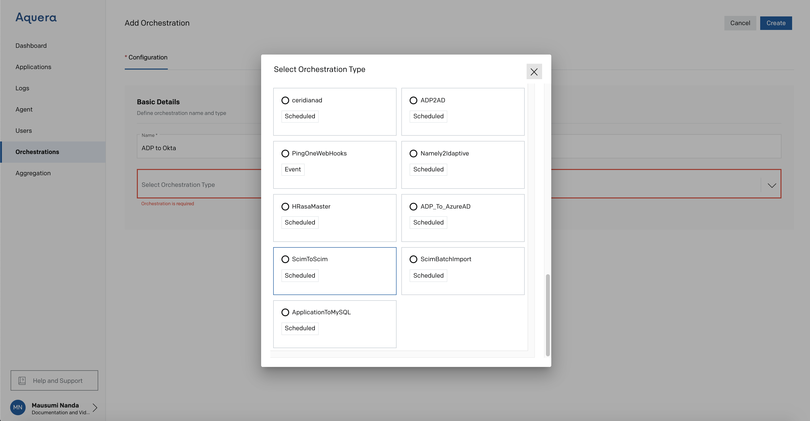
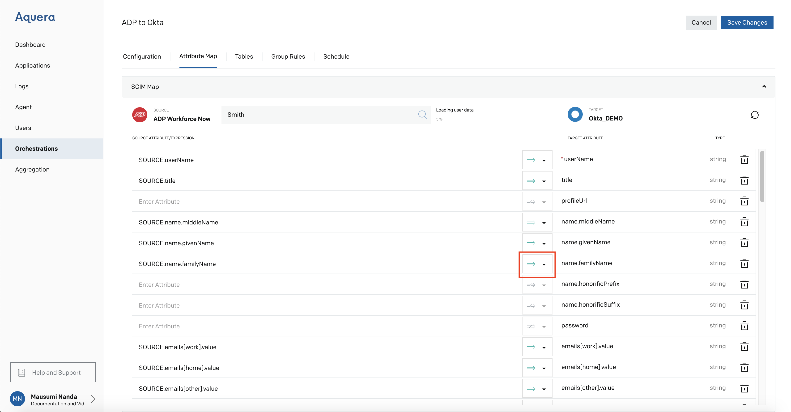
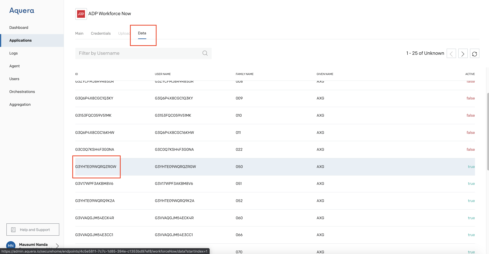

ADP to Okta Mapping of Attributes for Orchestration
Jump To
Create Orchestration
Attribute Mapping
Steps to pull data from ADP Application
Here the source is ADP and the Target is Okta for the process of Orchestration
Create Orchestration
Goto Aquera Admin Page
Click Add Orchestration
Enter a name for Orchestration and select Orchestration Type (ScimtoScim)

Enter Source Application as ADP
Enter Target Application as Okta

The Orchestration from ADP to Okta is Successfully Created
Attribute Mapping
Enter an userID to Preview their mappings

Enter a valid userID from the ADP Application (Data Section), for example G3YHTE09WQRQZRGW (Follow the next section for pulling the data from the ADP application)

Click Search

Turn on the Preview button

Mappings Preview is shown

Choose the Attribute that is mapped

Click dropdown next to the Arrow mark

You get the following dropdown

Select the first dropdown (Map on Create and Update)
Click Save Changes
The ADP to Okta Attribute mapping is Successful

Steps to pull data from ADP Application
Go to ADP Application that you created prior to the Orchestration

Go to Data tab

Copy the Field for userID (marked as True)

Use this userID in the above section